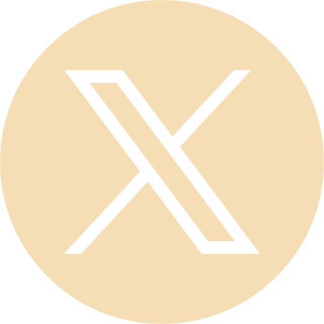
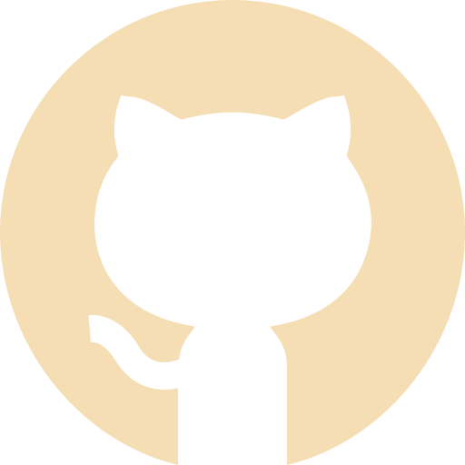

×
Ce portfolio d’apprentissage a pour vocation de m’aider à adopter une démarche réflexive et critique sur les compétences que j’ai acquises. Pour les trois compétences arrêtées à l’issue de ma deuxième année, j’expliquerai comment j’ai validé chacun de leurs apprentissages critiques (AC) grâce aux quatre projets majeurs menés durant cette année.
1. Optimiser
AC 1 – Choisir des structures de données complexes adaptées au problème
CE2.02 – En recensant les algorithmes et les structures de données usuels
Dans le projet Minecraft Bots (2025), la gestion multi-bots exigeait l’utilisation de structures de type file (pour la file d’attente des actions à exécuter) ainsi que de dictionnaires associant chaque bot à son état (inventaire, emplacement, cible). Enfin, pour l’hébergeur Foxelia (2024), la conception de la base de données a impliqué des tables relationnelles normalisées (clients, services, transactions) et l’utilisation de clés étrangères pour maintenir l’intégrité référentielle. Ces choix s’appuient sur la connaissance des principales structures (listes, files, piles, arbres, tables de hachage) et sur l’adaptation de ces techniques à chaque contexte métier, conformément à la CE2.02.
AC 2 – Utiliser des techniques algorithmiques adaptées pour des problèmes complexes (par ex. recherche opérationnelle, méthodes arborescentes, optimisation globale, intelligence artificielle…)
CE2.02 – En recensant les algorithmes et les structures de données usuels / CE2.04 – En justifiant les choix et validant les résultats
Dans le projet Minecraft Bots, j’ai dû résoudre le problème de navigation autonome dans un environnement 3D dynamique. J’ai implémenté un algorithme pour le pathfinding, justifiant ce choix par sa capacité à trouver le chemin le plus court en temps raisonnable. J’ai évalué les performances en mesurant les temps de calcul sur différents serveurs Minecraft publics, validant que l’algorithme répondait aux contraintes de fluidité. Enfin, lors du déploiement de Zabbix, j’ai configuré des modèles de vérification (templates) afin d’optimiser le cycle de collecte des métriques, justifiant les intervalles de sondage à l’aide d’une analyse statistique simple des charges du réseau. Ces exemples attestent de l’application de techniques algorithmiques variées (recherche arborescente, optimisation des temps de sondage, protocoles de diffusion), ainsi que de la validation de leurs résultats, répondant ainsi aux exigences de la CE2.02 et de la CE2.04.
AC 3 – Comprendre les enjeux et moyens de sécurisation des données et du code
CE2.01 – En formalisant et modélisant des situations complexes
Pendant le développement de l’application d’enchères, nous avons dû anticiper des scénarios de fraudes (enchères automatisées, usurpation d’identité, interception des messages). J’ai formalisé ces scénarios sous forme de diagrammes de séquence UML pour modéliser les flux de données et les points d’entrée potentiels d’attaques. J’ai ainsi implémenté un système d’authentification basé sur des tokens JWT et chiffré les communications avec TLS. De même, dans le projet Foxelia, la collecte d’informations bancaires et la gestion des comptes clients ont nécessité la modélisation des risques liés au stockage des données personnelles. J’ai mis en place des procédures de sauvegarde chiffrée et restreint l’accès aux bases de données via des politiques de contrôle d’accès. Enfin, lors de l’installation de Zabbix, j’ai sécurisé l’interface web en appliquant des certificats SSL et en configurant des ACL (Access Control Lists) pour limiter l’accès aux serveurs surveillés. Ces étapes montrent une formalisation des situations d’attaque et des moyens de protection adaptés, conformément à la CE2.01.
AC 4 – Évaluer l’impact environnemental et sociétal des solutions proposées
CE2.03 – En s’appuyant sur des schémas de raisonnement
Pour Foxelia, cofondé en 2024, j’ai analysé l’impact énergétique d’un hébergeur associatif comparé aux offres commerciales traditionnelles. J’ai établi un schéma de raisonnement comparant la consommation électrique de serveurs mutualisés vs. serveurs dédiés, en tenant compte de l’efficacité énergétique des data centers (PUE – Power Usage Effectiveness) et de la provenance d’électricité (filière verte ou non). En déployant Zabbix en 2025, nous avons veillé à configurer les intervalles de sondage de façon à réduire la charge réseau et serveur, estimant l’économie annuelle en kWh grâce aux métriques collectées. Ainsi, chaque choix technique a été accompagné d’une réflexion sur sa portée environnementale et sociétale, ce qui répond à la CE2.03.
2. Gérer
AC 1 – Optimiser les modèles de données de l’entreprise
CE4.02 – En assurant la cohérence et la qualité
Dans le cadre de Foxelia, j’ai conçu la base de données relationnelle pour gérer les clients, les facturations, les services d’hébergement et la facturation. J’ai veillé à normaliser les tables (3e forme normale) pour éviter les redondances et garantir la cohérence des informations (clé primaire, clés étrangères, contraintes d’unicité). Lors du déploiement de Zabbix, j’ai travaillé avec la base interne (MySQL) pour maintenir l’historique des métriques ; j’ai ajusté la rétention des données pour éviter la saturation du disque tout en conservant une cohérence temporelle des relevés. Ces expériences montrent comment j’ai optimisé et garanti la qualité des modèles de données, conformément à la CE4.02.
AC 2 – Assurer la confidentialité des données (intégrité et sécurité)
CE4.01 – En respectant les réglementations sur le respect de la vie privée et la protection des données personnelles / CE4.03 – En s’appuyant sur des bases mathématiques
Pour l’application d’enchères, nous avons mis en place un chiffrement asymétrique (infrastructure à clés publiques – PKI) pour garantir l’intégrité des offres et la confidentialité des échanges. Les mots de passe étaient hachés avec bcrypt (sel + salt) pour respecter le RGPD en vigueur. Dans le projet Foxelia, la gestion des données bancaires des clients a nécessité de respecter la directive européenne sur les services de paiement (PSD2) et le RGPD : j’ai formalisé des politiques de conservation minimale des données, et utilisé des certificats SSL pour les transactions en ligne. Avec Zabbix, j’ai configuré des comptes à privilèges distincts (RBAC – Role-Based Access Control) et activé la vérification en deux étapes (2FA) pour les administrateurs. Chaque mesure s’appuie sur des principes cryptographiques (hachage, chiffrement RSA, TLS) et respecte le cadre légal (RGPD, RGAA), répondant ainsi aux exigences de la CE4.01 et de la CE4.03.
AC 3 – Organiser la restitution de données à travers la programmation et la visualisation
CE4.02 – En assurant la cohérence et la qualité
Lors du déploiement de Zabbix, j’ai conçu et personnalisé des tableaux de bord (dashboards) pour restituer graphiquement les performances des serveurs, switches, pare-feux et baies de stockage. J’ai veillé à la cohérence des indicateurs (métriques de charge CPU, mémoire, trafic réseau) et à la qualité des graphes en définissant des seuils d’alerte pertinents. Dans l’application d’enchères, l’interface JavaFX mettait à jour en temps réel le statut des enchères et le classement des meilleurs enchérisseurs ; j’ai programmé la récupération asynchrone des données (via sockets) et assuré la cohérence entre les données et l’affichage graphique. Ces restitutions via programmation et visualisation garantit la qualité des informations présentées, conforme à la CE4.02
AC 4 – Manipuler des données hétérogènes
CE4.02 – En respectant les enjeux économiques, sociétaux et écologiques de l’utilisation du stockage de données, ainsi que les différentes infrastructures (data centers, cloud, etc.)
Dans Zabbix, j’ai configuré la collecte de métriques provenant de sources hétérogènes : serveurs Linux/Windows, switchs Cisco, baies SAN, pare-feux Fortinet. J’ai normalisé les formats (SNMP, IPMI, agents Zabbix) pour centraliser les données dans la même base et éviter les incohérences. Pour Foxelia, nous proposions des hébergements Web (Apache/Nginx), Node.js et Minecraft : j’ai dû traiter des logs d’applications variés (fichiers JSON, CSV, logs Apache) et les importer dans un système d’analyse. J’ai aussi évalué le coût économique et écologique du stockage (local ou cloud) en comparant les tarifs OVH, AWS, O2Switch. Ces manipulations de données hétérogènes, tout en respectant les enjeux écologiques et économiques, répondent à la CE4.02.
3. Conduire
AC 1 – Identifier les processus présents dans une organisation en vue d’améliorer les systèmes d’information
CE5.04 – En adoptant une démarche proactive, créative et critique
Lors du stage Zabbix (2025), j’ai cartographié les processus de supervision existants à l’ENSM : collecte de métriques, traitement des alertes, escalade des incidents. Cette démarche m’a permis de proposer des optimisations (scripts d’automatisation pour la génération de rapports, alertes plus fines) et d’introduire de nouveaux indicateurs afin d’améliorer la réactivité. Dans Foxelia, la gestion d’une association d’hébergeur m’a conduit à formaliser les processus de commande, facturation, support client et administration des serveurs. J’ai identifié des points de blocage (temps de provisionnement, coordination des mises à jour) et suggéré des workflows simplifiés (utilisation d’un CRM open source, automatisation des tâches via Ansible), démontrant ainsi une approche critique et créative. Ces exemples illustrent une démarche proactive d’amélioration des systèmes d’information, conformément à CE5.04.
AC 2 – Formaliser les besoins du client et de l’utilisateur
CE5.01 – En communiquant efficacement avec les différents acteurs d'un projet
Pour l’application d’enchères, en méthodologie SCRUM, en tant que Product Owner j'ai animé des réunion avec le client et les membres de l'équipe pour recueillir les spécifications (types d’enchères, contraintes de sécurité, délais). J’ai rédigé des user stories claires (ex. “En tant qu’utilisateur, je veux pouvoir déposer une enchère en moins de 30 secondes afin de participer efficacement”) et élaboré des critères d’acceptation précis. Avec Foxelia, nous avons mené des entretiens avec des passionnés de jeux vidéo et des petites associations pour comprendre leurs besoins (types de serveurs, budgets) et avons formalisé un cahier des charges détaillé. Dans le déploiement de Zabbix, j’ai rencontré les spécialistes IT de l’ENSM pour définir les équipements critiques à superviser et la fréquence des rapports. La communication régulière, à l’écrit (comptes rendus de réunion) et à l’oral (démonstrations de prototypes de dashboard), a été essentielle pour formaliser des besoins exhaustifs, répondant à la CE5.01.
AC 3 – identifier les critères de faisabilité d’un projet informatique
CE5.02 – En respectant les règles juridiques et les normes en vigueur
Dans l’application d’enchères, nous avons dû évaluer la faisabilité technique d’un chiffrement en temps réel pour chaque message tout en respectant la législation sur la protection des données (RGPD) : j’ai vérifié que l’utilisation de TLS et de bibliothèques Java compatibles avec la norme suffisait pour garantir la conformité. Lors de la création de Foxelia, nous avons analysé la faisabilité juridique d’un hébergeur associatif : nous avons vérifié les obligations légales (déclaration CNIL, conditions générales de vente, mentions légales) et consulté le Code des postes et des communications électroniques pour nous assurer du respect des normes. Pour Zabbix, j’ai évalué les contraintes d’architecture réseau (segmentations VLAN, politiques de firewall) pour m’assurer que le déploiement n’affecterait pas la conformité aux référentiels ISO de l’établissement. Ces démarches montrent une prise en compte des aspects juridiques et normatifs, conformément à la CE5.02.
AC 4 – Définir et mettre en œuvre une démarche de suivi de projet
CE5.03 – En sensibilisant à une gestion éthique, responsable, durable et interculturelle
En tant que contributeur pour l’application d’enchères, j’ai participé à des rituels réguliers : daily meeting, sprint review, sprint retro, et j’ai partagé des rapports de vélocité pour suivre l’avancement. J’ai veillé à instaurer un climat de confiance au sein de l’équipe et à encourager la prise en compte de la diversité culturelle (équipe d’étudiants de profils variés). Pour Foxelia, j’ai coordonné le suivi budgétaire en organisant des points hebdomadaires sur les dépenses d’infrastructure, tout en promouvant l’utilisation de ressources à faible impact (hébergeurs “verts”) et l’adoption de pratiques responsables (mise en sommeil automatique des serveurs inactifs). Dans le projet Zabbix, j’ai planifié les phases (inventaire, déploiement pilote, déploiement global) et fourni des rapports de suivi pour informer les parties prenantes, en respectant les principes d’éthique (confidentialité des données surveillées) et de durabilité (réduction des intervalles de sondage pour économiser l’énergie). Cette démarche de suivi, axée sur l’éthique et la responsabilité, est pleinement alignée avec la CE5.03.

